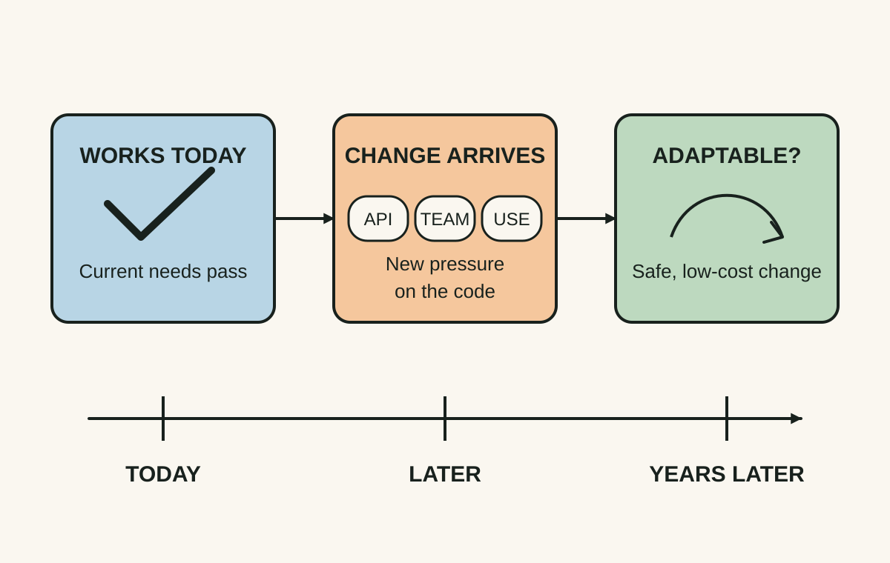
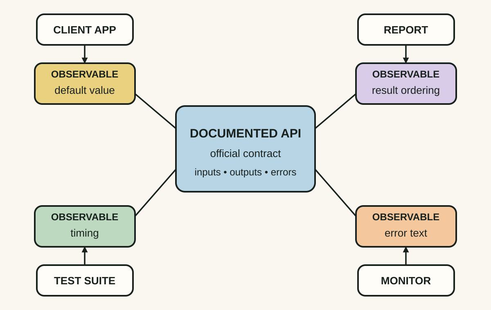
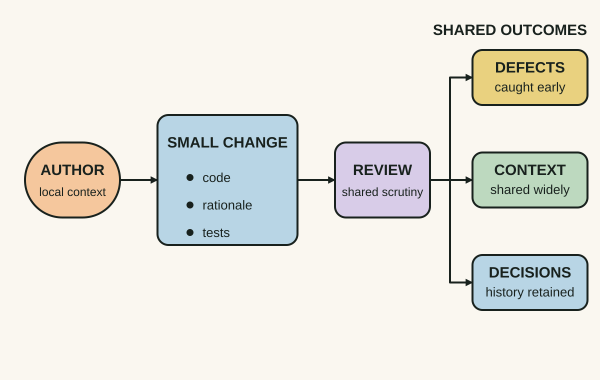

Daily lesson ·
Software Engineering at Google
How to keep software changeable, understandable and economically sustainable as years, teams and dependencies accumulate.
Idea 1
Engineer for change, not just correctness today #
The idea
The authors distinguish programming from software engineering by adding time, scale and trade-offs. Programming asks whether code works now. Software engineering also asks whether the organisation can still change that code safely and economically throughout its useful life.
Their definition of sustainability is practical: a project is sustainable when it retains the capability to respond to valuable technical or business changes. It does not require performing every possible upgrade.

Why it matters
A shortcut can be rational for a three-week prototype and reckless for a ten-year business system. Expected lifespan should influence investment in tests, interfaces, automation, documentation, migration paths and consistency.
Apply it today
Pick one component you expect to survive for several more years. Name one plausible change that would be disproportionately difficult: a vendor replacement, identity change, data migration, new client or new regulatory rule.
Write the smallest move that would preserve the option to make that change later. Do not build the future feature; reduce one source of avoidable lock-in.
Caveat or failure mode
Future-proofing can become speculative over-engineering. Preserve capability for plausible changes with asymmetric consequences, not every imaginable future.
Idea 2
Observable behaviour becomes part of your API #
The idea
Hyrum's Law states that, with enough users of an API, every observable behaviour will eventually be depended on by somebody, whether or not it was documented as part of the contract. Ordering, error text, timing, default values, whitespace, side effects and quirks can all become dependencies.
The practical lesson is not that APIs can never change. It is that the real compatibility surface is usually larger than the promised one.

Why it matters
Apparently harmless refactors can break production consumers because compatibility risk grows from what users can observe, not merely what the specification promises.
Apply it today
Choose one API, database view, file export or shared component. List three observable behaviours that are not explicitly guaranteed.
Classify each as safe to change, change only with telemetry or migration, or effectively part of the contract now.
Caveat or failure mode
Hyrum's Law is an engineering observation, not a mathematical law. A small system with known consumers can often change behaviour safely after checking them directly.
Idea 3
Code review is a knowledge-distribution system #
The idea
The book treats code review as more than defect detection. A well-designed process also improves comprehension, consistency, shared ownership, knowledge transfer and the historical record of why a change was made.
Google's account explicitly acknowledges the cost: review adds latency and can become unsustainable when it is heavyweight. Small changes, prompt feedback and automation keep the human attention focused on judgement.

Why it matters
When only one developer understands an area, every future change queues behind that person. Review can gradually spread comprehension and make ownership less fragile.
Apply it today
For the next meaningful review, ask: What assumption does this change rely on that the next maintainer is least likely to know?
If it matters, move that rationale into the code, test, change description or durable documentation. A review-only explanation may disappear from where future readers need it.
Caveat or failure mode
Mandatory review can become ceremony or a gatekeeper queue. Optimise for small changes, fast first responses, clear reviewer roles and automated checks; do not confuse more reviewers with better review.
Retrieval practice · 6 questions
Learning check
Answer all 6 before checking. Your first attempt is saved only in this browser, and each explanation appears after you check your answers. A 3-question review can appear on the homepage from tomorrow.
6 questions not yet answered.
Today's experiment · 10 minutes
Run a changeability scan
- Choose one long-lived component you actively own.
- Write one plausible change it may face in the next two years.
- Identify the single assumption or dependency that would make that change hardest.
- Write one follow-up action that would take less than a day to implement later.
Observable result: Finish this sentence: If X changes, Y is our biggest obstacle, so the next cheap move is Z.
Retrieval practice
Spaced recall
- From The Goal: how would you distinguish the current system constraint from a stage that merely looks busy?
- From The Design of Everyday Things: what might a code review interface be teaching when authors send enormous changes for review?
Verification
Source notes
These links support the attributed claims and edition details; applications and extensions are labelled in the lesson.
One-sentence takeaway